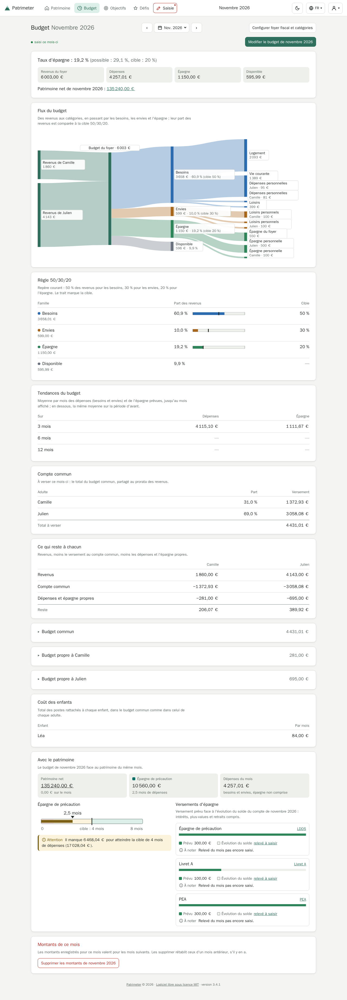
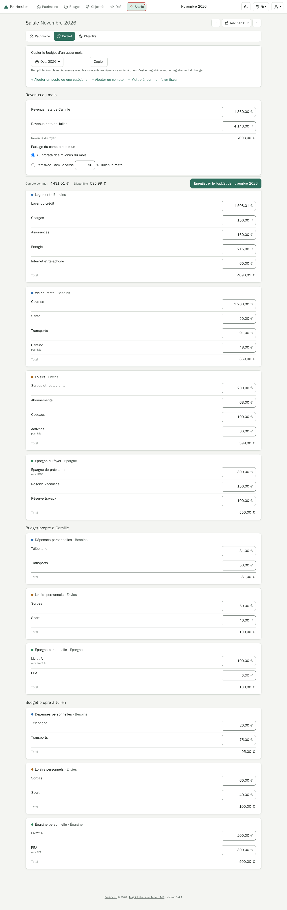
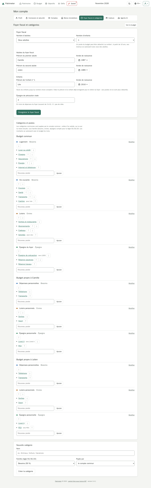
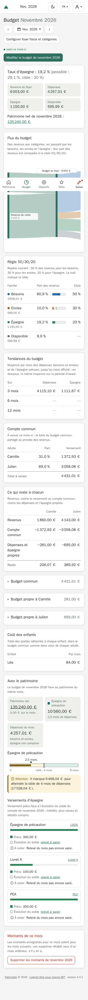

Budget du foyer¶
Menu Budget : le budget mensuel du foyer. Les revenus de chaque adulte paient d'abord le budget commun (logement, vie courante, loisirs et épargne du foyer), versé sur le compte commun. Chacun paie ensuite ses dépenses et son épargne propres sur ce qui lui reste. Le budget se lit avec le patrimoine du même mois et se compare à la règle 50/30/20 : 50 % des revenus pour les besoins, 30 % pour les envies, 20 % pour l'épargne.

Un seul compte Patrimeter gère tout le foyer : vous saisissez les revenus et les dépenses de chacun, votre conjoint n'a pas besoin de se connecter.
Créer le budget¶
À la première visite, Patrimeter demande :
- Nombre d'adultes (un ou deux) et Nombre d'enfants (aucun à 12), dans deux listes : le formulaire n'affiche ensuite que les lignes de ces personnes ;
- pour chaque adulte et chaque enfant, son prénom et son année de naissance, choisie dans un calendrier des années. Un poste du budget peut être rattaché à un enfant : le budget affiche alors ce que coûte chacun. Un enfant en âge de travailler (16 ans dans l'année) peut avoir ses propres revenus ;
- Épargne de précaution visée, en mois de dépenses du foyer (souvent de 3 à 6 ; 0 : pas de cible).
Créer le budget propose des catégories et leurs postes, à renommer, compléter ou supprimer :
| Catégorie | Famille | Postes proposés |
|---|---|---|
| Logement | besoins | loyer ou crédit, charges, assurances, énergie, internet et téléphone |
| Vie courante | besoins | courses, santé, transports |
| Loisirs | envies | sorties et restaurants, abonnements, cadeaux |
| Épargne du foyer | épargne | épargne de précaution, réserve vacances, réserve travaux |
| Dépenses personnelles (chaque adulte) | besoins | téléphone, transports |
| Loisirs personnels (chaque adulte) | envies | sorties, sport |
| Épargne personnelle (chaque adulte) | épargne | Livret A, PEA |
Saisir les montants du mois¶
Modifier le budget de…, ou la partie Budget du menu Saisie du mois, ouvre la saisie du budget du mois :
- Revenus du mois : les revenus nets de chaque adulte, et ceux de chaque enfant qui a 16 ans ou plus dans l'année (un job d'été, un apprentissage…), ajoutés aux revenus du foyer ;
- Partage du compte commun (couple) : au prorata des revenus du mois, ou part fixée (par exemple, le premier adulte verse 27,5 %, le second le reste) ;
- le montant de chaque poste, catégorie par catégorie : budget commun, puis budget propre à chaque adulte. Un champ vide vaut 0.
Les totaux des catégories, le versement au compte commun et ce qui reste au foyer se recalculent pendant la frappe ; Entrée passe au poste suivant. Les montants se lisent dans la langue de la page, comme dans la saisie du mois.

Les montants enregistrés pour un mois valent pour les mois suivants, jusqu'à ce que vous les changiez : un mois sans saisie reprend le budget d'un mois précédent, marqué reporté. Pour changer le budget à partir d'un mois (augmentation, nouveau crédit…), modifiez le budget de ce mois-là. Supprimer les montants de… rétablit ceux d'un mois antérieur.
En haut de la saisie, Copier le budget d'un autre mois remplit le formulaire avec les montants en vigueur au mois choisi dans le calendrier : vérifiez-les, puis enregistrez ; rien n'est enregistré avant. Le même cadre mène à l'ajout d'un poste ou d'une catégorie (foyer fiscal et catégories) et d'un compte, et Mettre à jour mon foyer fiscal ouvre le foyer fiscal (adultes, enfants, cible de précaution) dans Mon compte. Le budget du mois prochain peut se préparer à l'avance.
Tant que le foyer fiscal n'existe pas, la partie Budget de la saisie du mois l'indique (Pas encore de budget) avec un seul bouton, Créer mon foyer fiscal, qui mène à la création du budget.
Lire le budget¶
- Synthèse : taux d'épargne (épargne prévue rapportée aux revenus), taux possible (en y ajoutant le reste disponible), revenus du foyer, dépenses (besoins et envies), épargne et reste disponible (ou dépassement si le budget excède les revenus) ; patrimoine net du mois, avec un lien vers la page Patrimoine.
- Flux du budget : des revenus de chaque adulte au budget du foyer, puis aux besoins, envies, épargne et disponible, avec leur part des revenus et leur cible, puis aux catégories. L'épaisseur d'un flux est proportionnelle à son montant. Sur un téléphone, le graphique défile horizontalement.
- Règle 50/30/20 : la part des revenus de chaque famille, et le trait de sa cible.
- Compte commun : le versement de chaque adulte. Au prorata, la part du premier adulte est arrondie au centime le plus proche ; le second verse le reste, si bien que les deux versements font toujours le total.
- Ce qui reste à chacun : revenus, moins le versement au compte commun, moins ses dépenses et son épargne propres.
- Budget commun et budget propre à chaque adulte : le détail des catégories et des postes, à déplier (la flèche ▸ devant le titre tourne quand le détail est ouvert).
- Coût des enfants : le total des postes rattachés à chaque enfant ; la rubrique n'apparaît que si un poste est rattaché à un enfant du foyer.
Exemple : un couple gagne 1 860 € et 4 143 € ; le budget commun est de 4 554,74 €, partagé avec une part fixée de 27,5 %.
| Premier adulte | Second adulte | |
|---|---|---|
| Revenus | 1 860,00 € | 4 143,00 € |
| Compte commun (27,5 % / 72,5 %) | − 1 252,55 € | − 3 302,19 € |
| Dépenses et épargne propres | − 592,30 € | − 836,00 € |
| Reste | 15,15 € | 4,81 € |
Tendances du budget¶
Sous la règle 50/30/20, Tendances du budget donne la moyenne par mois des dépenses (besoins et envies) et de l'épargne prévues sur 3, 6 et 12 mois jusqu'au mois affiché, et en dessous la même moyenne sur la période d'avant : dépensez-vous plus qu'avant, épargnez-vous moins ? Une ligne par période, colonnes Dépenses et Épargne. Une période qui remonte avant le premier budget saisi reste vide.
Avec le patrimoine¶
Le budget d'un mois est rapproché du patrimoine du même mois :
- Chiffres clés : patrimoine net du mois (et son évolution depuis le mois précédent), épargne de précaution (en mois de dépenses), dépenses du mois (besoins et envies, épargne non comprise) ;
- Épargne de précaution : le niveau de la pyramide, rapporté aux dépenses mensuelles du foyer, sur une jauge en mois de dépenses (la même que celle des recommandations de la page Patrimoine) : zones sous un mois, sous la cible et jusqu'au double de la cible, trait de la cible, et un constat (Alerte, Attention avec le montant qui manque, Bon point, ou À noter au-delà du double de la cible) ;
- Versements d'épargne : un poste d'épargne rattaché à son compte (Livret A, PEA…) affiche deux barres, son versement prévu et l'évolution du solde du compte sur le mois (relevé du mois moins celui du mois précédent), puis un constat : versement atteint, moins que prévu (avec l'écart), solde en baisse, ou relevé du mois à saisir. Cette évolution comprend aussi les intérêts, les plus-values et les retraits : c'est un repère ;
- Patrimoine net du mois, également en tête du budget.
Le réel avec Carbure¶
Relié à votre instance Carbure, le budget compare chaque mois le prévu de chaque catégorie aux dépenses réelles de vos comptes bancaires.
Foyer fiscal et catégories¶
La page Foyer fiscal et catégories, onglet de Mon compte, aussi ouverte par le bouton Configurer foyer fiscal et catégories en haut de la page Budget, organise le budget :
- Foyer fiscal : les mêmes listes du nombre d'adultes et d'enfants, puis chacun avec son année de naissance. Baisser le nombre d'enfants retire les derniers de la liste ; vider le prénom d'un enfant le retire du foyer, et ses postes ne lui sont plus rattachés. Un enfant garde ses postes quand on change son prénom. Un foyer créé avant la version 2.26 demande les années manquantes à son prochain enregistrement. Cible de l'épargne de précaution. Un second adulte qui rejoint le foyer reçoit les catégories proposées ; un adulte ne quitte le foyer qu'une fois ses catégories propres supprimées ou rattachées au budget commun ;
- Catégories : nom, famille de la règle 50/30/20 (besoins, envies, épargne) et qui la paie (le compte commun, ou un adulte sur ce qui lui reste) ;
- Postes : Ajouter sous une catégorie ; le nom d'un poste ouvre sa page : catégorie, enfant éventuel et, pour un poste d'épargne, le compte qui reçoit le versement.
Les flèches ↑ et ↓ changent l'ordre : une catégorie parmi celles du même budget (commun ou d'un adulte), un poste dans sa catégorie. Le budget et sa saisie suivent cet ordre.
Supprimer une catégorie supprime ses postes ; supprimer un poste retire son montant de tous les mois.

Sur téléphone¶

Confidentialité¶
Le budget est chiffré avec votre clé, comme vos comptes : prénoms, noms des catégories et des postes, revenus et montants. Il fait partie de l'export de vos données.